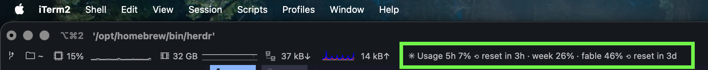
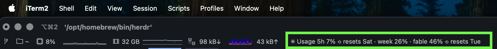
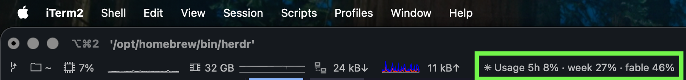
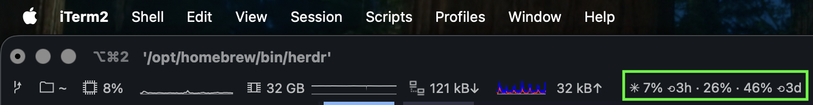
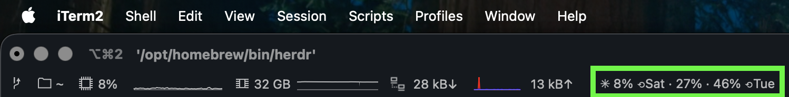
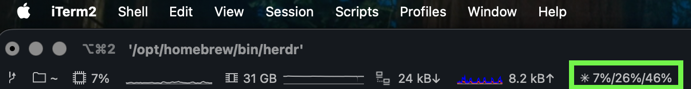

Your Claude quota, live in the terminal status bar.
Session, weekly, and per-model windows with reset times. The same numbers as /usage, always in view.
The line it keeps in your bar:
The repo ships a machine-readable runbook, AGENTS.md. Paste one line into Claude Code and the agent clones the repo, detects which terminal you're in, wires it up, and verifies its own work.
Paste into Claude Code
Works in any coding agent that can run shell commands. The one step it can't do for you is drag the widget into iTerm2's status bar, and it will tell you when.
You find out you hit your weekly limit when Claude tells you. Mid-task. The number existed the whole time; it was hidden behind a command you have to remember to run.
claude-usage makes remaining quota ambient, like a battery percentage, so you can check before starting something big.
iTerm2's component list ships six ready-made entries, each previewed right where you drag it from — what you see is what you get, with nothing to configure afterward. They're shown widest first; choose whichever suits the room your bar has.
Window labels, percentages, and how long until each window resets, counted down from now. The most informative, and the widest.

The same information, but resets as wall-clock times and dates rather than countdowns. Pick this if you'd rather know when than how long.

Labels and percentages, no reset times — for when resets are noise to you and you just want the numbers.

Drops the labels and the word “Usage”, keeping percentages and bare countdown marks. Roughly a third the width of Wide, and still tells you when things reset.

The compact layout with clock times instead of countdowns.

Three percentages and nothing else, for a bar that's already full.

Every capture above is a real status bar; the green outline marks the component. tmux, WezTerm, kitty, and starship render the same line, and pick their width the same way.
Reads the Claude Code OAuth token already on your machine: env var, macOS Keychain, or ~/.claude/.credentials.json. It never refreshes the token, and the token goes nowhere except api.anthropic.com.
Calls the same endpoint the /usage screen reads, so you get the real remaining percentage per window, not an estimate reconstructed from token logs.
A 60-second on-disk cache feeds every terminal at once. Offline shows your last good numbers marked ✳~, an expired login says so, and display modes always exit 0, so your bar never breaks.
The core is ~790 lines of stdlib-only Python with zero dependencies and 121 tests, MIT licensed. You can read the whole thing before trusting it near your credentials.
Three commands, then wire up your terminal with the per-terminal guides in the README.
| iTerm2 | Native status bar component via the Python API. |
|---|---|
| tmux | TPM plugin: set -g @plugin 'Tatendaz/claude-usage', then a #{claude_usage} placeholder. |
| WezTerm | One require in wezterm.lua renders it in the right status area. |
| kitty | Tab bar integration (experimental). |
| starship, zsh | Prompt segment, or Claude Code's own statusline. Any bar that can run a command works. |